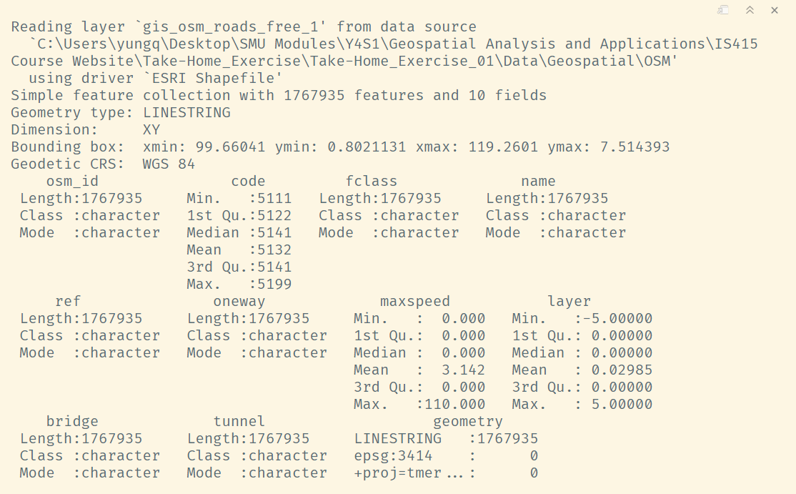
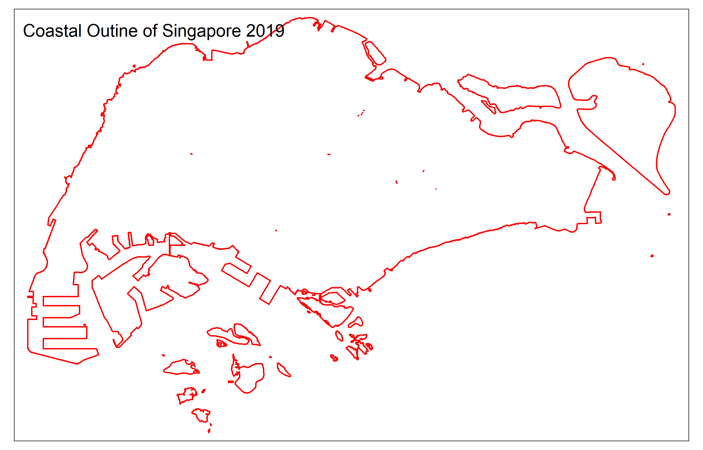
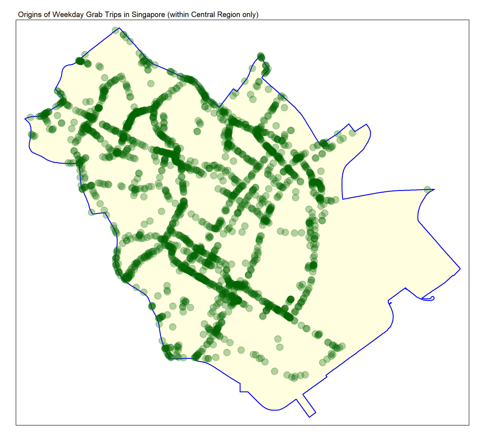
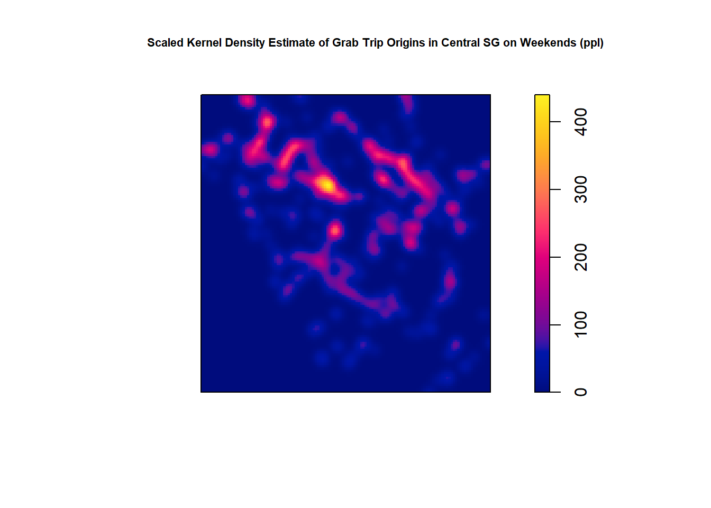
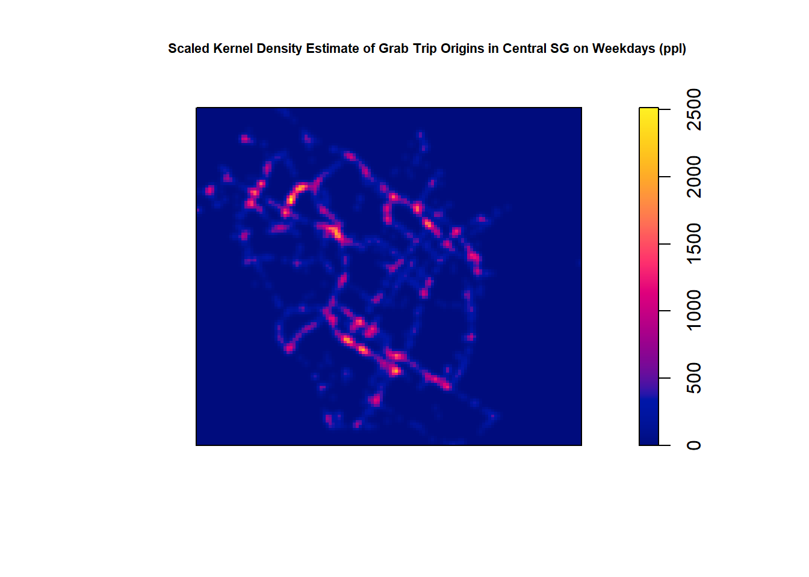
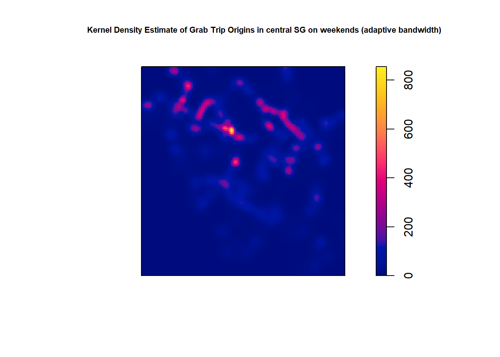
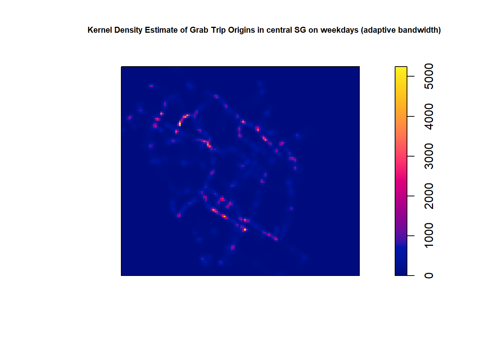
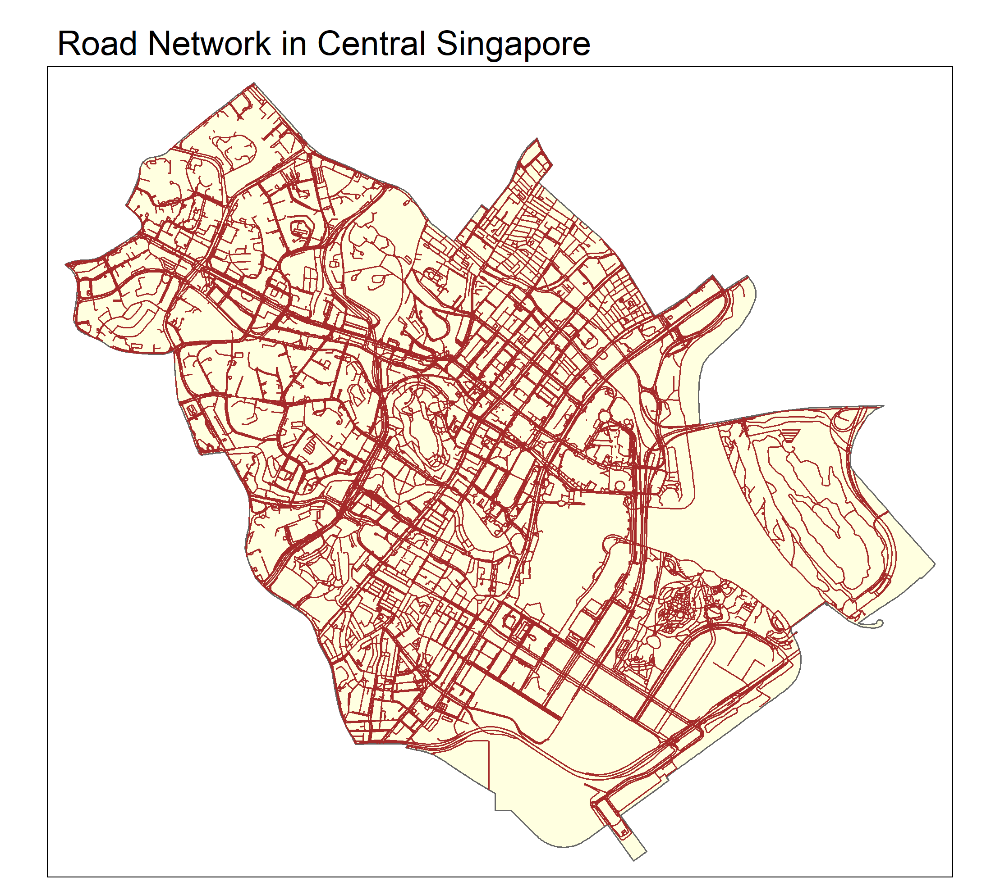

Reveal Code
pacman::p_load(sf, tidyverse, arrow, lubridate, tmap, maptools, spatstat, spNetwork, htmlwidgets)The following R-packages and their use case are as follows:
The p_load() functionfrom the pacman package is used to load the libraries and automatically install them for the user if they aren’t already installed.
pacman::p_load(sf, tidyverse, arrow, lubridate, tmap, maptools, spatstat, spNetwork, htmlwidgets)For this report, 3 different datasets are of interest. Grab-Posisi (parquet) from Grab to obtain the spatial events of Grab trips, MPSZ2019 (shp)from data.gov.sg to provide us with the geographical boundaries for our analysis and gis_osm_roads_free_1 (shp) from OpenStreetMap to obtain the road networks for analysis.
The Grab-Posisi data is contained within 10 compartmentalised parquet files, thus, the read_parquet() function from the Arrow package is required. The files are loaded iteratively in a loop and immediately appended to each other without assignment using the bind_rows() function.
grab_df <- read_parquet("Data/Geospatial/GrabPosisi/part-00000-8bbff892-97d2-4011-9961-703e38972569.c000.snappy.parquet")
for (i in 1:9) {
grab_df <- grab_df %>%
bind_rows(read_parquet(paste0("Data/Geospatial/GrabPosisi/part-0000", as.character(i), "-8bbff892-97d2-4011-9961-703e38972569.c000.snappy.parquet")))
}We can see that the Grab-Posisi dataset in its entirety at 30+ million rows is way too large for computation.
glimpse(grab_df)
grab_df$pingtimestamp <- as_datetime(grab_df$pingtimestamp)
We will store the compiled Grab-Posisi just in case there is a need for its entirety in the future as there is spare memory on my drive for now.
write_parquet(grab_df, "Data/Geospatial/GrabPosisi/Grab_Posisi.parquet")Luckily, as we are interested only in the analysis of the origins of Grab calls in Singapore, the Grab-Posisi data can be subset to reduce its size in the R-Environment to the necessary only. This is achieved using the group_by() function to sort each trip record by its ping time-stamp within the trip itself only. filter() is used to extract only the earliest, and therefore, the origin record while mutate() is used to extract the day of the week in which the trip occurred. The result is stored as an R-Data Structure (RDS) file using the write_rds() function to avoid re-computation in the future.
grab_origin_df <- grab_df %>%
group_by(trj_id) %>%
arrange(pingtimestamp) %>%
filter(row_number() == 1) %>%
mutate(weekday = wday(pingtimestamp, label = TRUE, abbr = TRUE))
glimpse(grab_origin_df)
paste("From:", min(grab_origin_df$pingtimestamp), "To:", max(grab_origin_df$pingtimestamp))
write_rds(grab_origin_df, "Data/Geospatial/RDS/Grab_Origins_Posisi.rds")
From a glimpse() of the subset data, we can see that the data set has been reduced considerably to 28,000 rows. This is still too large for kernel density estimations for my computer to handle, but for data wrangling and investigation purposes, it is good enough. As such, we will not rush to remove columns in case there is a need for them later especially as the main constraint in spatial computations is the number of events in the data.
Additionally, we can see that the data exists for 14 days only between 8th April 2019 and 21st April 2019.
We save this subset data so that the code may be re-run in the future without going through the costly process of compiling and subsetting again.
grab_origin_df <- read_rds("Data/Geospatial/RDS/Grab_Origins_Posisi.rds")Both the Singapore Master Plan Subzone (mpsz) and Road Network Data are spatial data which require the sf package to read in order to retain the spatial information contained. As such, we will use the st_read() function to read the data, and apply the st_transform() function to cast them to a consistent coordinate reference system (CRS) so that we may apply spatial analysis across both data. The CRS we will use is SVY21, which is specific for Singapore.
The Singapore Master Plan Subzone is loaded into the R-Environment below:
mpsz2019 <-
st_read("Data/Geospatial/MPSZ-2019", layer = "MPSZ-2019") %>%
st_transform(crs = 3414)Reading layer `MPSZ-2019' from data source
`C:\Users\yungq\Desktop\SMU Modules\Y4S1\Geospatial Analysis and Applications\IS415 Course Website\Take-Home_Exercise\Take-Home_Exercise_01\Data\Geospatial\MPSZ-2019'
using driver `ESRI Shapefile'
Simple feature collection with 332 features and 6 fields
Geometry type: MULTIPOLYGON
Dimension: XY
Bounding box: xmin: 103.6057 ymin: 1.158699 xmax: 104.0885 ymax: 1.470775
Geodetic CRS: WGS 84summary(mpsz2019) SUBZONE_N SUBZONE_C PLN_AREA_N PLN_AREA_C
Length:332 Length:332 Length:332 Length:332
Class :character Class :character Class :character Class :character
Mode :character Mode :character Mode :character Mode :character
REGION_N REGION_C geometry
Length:332 Length:332 MULTIPOLYGON :332
Class :character Class :character epsg:3414 : 0
Mode :character Mode :character +proj=tmer...: 0 From the summary() of the data, we can see that it contains spatial polygon features, originally projected in WGS84, and we were successful in transforming the CRS to SVY21 (or EPSG: 3414 equivalently).
Plotting the Master-Plan Subzone geospatial data with tmap’s tm_polygons() function for visualisation:
mpsz2019_plot <- mpsz2019 %>%
tm_shape() +
tm_polygons(col = "lightyellow", border.col = "navy") +
tm_layout(main.title = "Singapore Master Plan Boundaries 2019", main.title.size = 1) + tm_compass(size = 1)
tmap_save(tm = mpsz2019_plot, "Screenshots/mpsz2019.png")
The OpenStreetMap (OSM) Road is loaded into the R-Environment below:
roads <-
st_read("Data/Geospatial/OSM", layer = "gis_osm_roads_free_1") %>%
st_transform(crs = 3414)
summary(roads)
Here, the data contains spatial linestrings, and like the mpsz data, is originally projected using WGS84 and successfully converted to SVY21. Also, although we know from the data source that the OSM road networks encompasses Singapore, Brunei and Malaysia, we can also tell from the R-outputs that it extends beyond Singapore’s borders. Compared to the mpsz data, its bounding box is clearly further extending. This also explains the vast number of features the data contains and its long reading time.
In the interest of computation times, we will subset the road networks to Singapore’s borders only. To do so, first we generate the Singaporean borders as a spatial polygon object using the st_union() function. We then employ the st_intersection() function on the generated outline of Singapore and the OSM road network to obtain the Singaporean road network only.
First, the coastal outline of Singapore is generated, and its result is saved as an RDS file with the write_rds() function to again avoid re-generation in the future.
coastal_outline <- st_union(mpsz2019)
write_rds(coastal_outline, "Data/Geospatial/RDS/coastal_outline_sg.rds")coastal_outline <- read_rds("Data/Geospatial/RDS/coastal_outline_sg.rds")sg_coastal_outline_plot <- tm_shape(coastal_outline) +
tm_polygons(col = "white", border.col = "red", lwd = 1.7) +
tm_layout("Coastal Outine of Singapore 2019")
tmap_save(sg_coastal_outline_plot, "Screenshots/sg_coastal_outline_plot.png")
Next, we subset the OSM road networks by using the st_intersection() function to constrict the spatial line objects to those within the coastal boundaries of Singapore as generated. Considering the long computation time due to the size of the OSM data, we will save the constricted road network as an RDS file.
roads_sg <- st_intersection(coastal_outline, roads)
write_rds(roads_sg, "Data/Geospatial/RDS/sg_road_network.rds")roads_sg <- read_rds("Data/Geospatial/RDS/sg_road_network.rds")Visualising the generated Singapore road networks with tmap using
mpsz_w_roads2019_plot <-
tm_shape(coastal_outline) +
tm_polygons(col = "lightyellow", border.col = "red", border.alpha = 0.6) + tm_layout(main.title = "Singapore Road Network 2019", main.title.size = 1) +
tm_compass(size = 1) +
tm_shape(roads_sg) +
tm_lines()
tmap_save(tm = mpsz_w_roads2019_plot, "Screenshots/mpsz_w_roads2019.png")
Here we can observe that there is an extensive road network present outside the mainland of Singapore in the dataset. Thus, we will need to remove them if mainland Singapore is the scope of the study, or if they fall within the scope regardless as they will otherwise affect network contrained kernel density estimates. This is as Grab is unlikely to operate outside the mainland especially on islands like Pulau Tekong, thus, impacting global kernel density estimates because of its low or zero local density.
First though, we should investigate the Grab-Posisi Data further as seen prior, we will need to reduce the scope of our analysis so that computations may be completed in a reasonable amount of time.
To investigate the Grab-Posisi data, we must first cast it into a simple features object so that R can recognise the coordinate fields in the dataset as spatial and not simply numeric data. The st_as_af() function is used for this purpose, specifying the longitude and latitudes in that order, and the CRS as WGS84 (or EPSG: 4326 equivalently) as the data are geographical coordinates. The CRS of the data is then transformed into SVY21 format using the st_transform() function by specifying the crs parameter to be 3414, the EPSG code for SVY21.
grab_origin_sf <- grab_origin_df %>%
st_as_sf(coords = c("rawlng", "rawlat"), crs = 4326) %>%
st_transform(crs = 3414)
summary(grab_origin_sf) trj_id driving_mode osname
Length:28000 Length:28000 Length:28000
Class :character Class :character Class :character
Mode :character Mode :character Mode :character
pingtimestamp speed bearing
Min. :2019-04-08 00:09:26.00 Min. :-1.000 Min. : 0.0
1st Qu.:2019-04-11 08:48:29.25 1st Qu.: 3.590 1st Qu.: 90.0
Median :2019-04-15 00:08:48.00 Median : 9.945 Median :179.0
Mean :2019-04-14 21:29:59.93 Mean : 9.566 Mean :172.5
3rd Qu.:2019-04-18 10:47:59.25 3rd Qu.:14.550 3rd Qu.:256.0
Max. :2019-04-21 23:33:28.00 Max. :30.949 Max. :359.0
accuracy weekday geometry
Min. : 1.000 Sun:3983 POINT :28000
1st Qu.: 3.900 Mon:3975 epsg:3414 : 0
Median : 6.000 Tue:4008 +proj=tmer...: 0
Mean : 7.617 Wed:4016
3rd Qu.: 10.000 Thu:4008
Max. :728.000 Fri:4002
Sat:4008 We can see from a the summary of the data that the casting of the grab origins data to a simple features object is successful and that a spatial point geometry column has been added to the data in place of “rawlng” and “rawlat”.
As we are using the spatstat package, we will need to cast our Grab trip origins events data from a simple features (sf) object to a planar point pattern (ppp) object to work with it.
To do so, we can utilise the as_Spatial() function from the sf package to first convert it into a spatial point dataframe which can then be further transformed to a generic sp object using the as() from the same package by specifying the object class to be “SpatialPoints”. This is required to safely convert an sf object to a ppp object as the as() function does not support casting an sf object to a ppp object directly. The resulting sp object is then computed as a ppp object using the as() function but this time specifying the new object class to be “ppp”.
The transformation process and a summary of each casting step are as follows:
grab_origin_spatial <- grab_origin_sf %>%
as_Spatial()
summary(grab_origin_spatial)Object of class SpatialPointsDataFrame
Coordinates:
min max
coords.x1 3628.243 49845.23
coords.x2 25198.140 49689.64
Is projected: TRUE
proj4string :
[+proj=tmerc +lat_0=1.36666666666667 +lon_0=103.833333333333 +k=1
+x_0=28001.642 +y_0=38744.572 +ellps=WGS84 +towgs84=0,0,0,0,0,0,0
+units=m +no_defs]
Number of points: 28000
Data attributes:
trj_id driving_mode osname
Length:28000 Length:28000 Length:28000
Class :character Class :character Class :character
Mode :character Mode :character Mode :character
pingtimestamp speed bearing
Min. :2019-04-08 00:09:26.00 Min. :-1.000 Min. : 0.0
1st Qu.:2019-04-11 08:48:29.25 1st Qu.: 3.590 1st Qu.: 90.0
Median :2019-04-15 00:08:48.00 Median : 9.945 Median :179.0
Mean :2019-04-14 21:29:59.93 Mean : 9.566 Mean :172.5
3rd Qu.:2019-04-18 10:47:59.25 3rd Qu.:14.550 3rd Qu.:256.0
Max. :2019-04-21 23:33:28.00 Max. :30.949 Max. :359.0
accuracy weekday
Min. : 1.000 Sun:3983
1st Qu.: 3.900 Mon:3975
Median : 6.000 Tue:4008
Mean : 7.617 Wed:4016
3rd Qu.: 10.000 Thu:4008
Max. :728.000 Fri:4002
Sat:4008 grab_origin_sp <- grab_origin_spatial %>%
as("SpatialPoints")
summary(grab_origin_sp)Object of class SpatialPoints
Coordinates:
min max
coords.x1 3628.243 49845.23
coords.x2 25198.140 49689.64
Is projected: TRUE
proj4string :
[+proj=tmerc +lat_0=1.36666666666667 +lon_0=103.833333333333 +k=1
+x_0=28001.642 +y_0=38744.572 +ellps=WGS84 +towgs84=0,0,0,0,0,0,0
+units=m +no_defs]
Number of points: 28000grab_origin_ppp <- grab_origin_sp %>%
as("ppp")
summary(grab_origin_ppp)Planar point pattern: 28000 points
Average intensity 2.473666e-05 points per square unit
Coordinates are given to 3 decimal places
i.e. rounded to the nearest multiple of 0.001 units
Window: rectangle = [3628.24, 49845.23] x [25198.14, 49689.64] units
(46220 x 24490 units)
Window area = 1131920000 square unitsTo visualise the Grab trip origins data we prepared, we can use the tm_dots() function. Additionally, as there are 28,000 event points located on a relatively small geographical area, we can expect the points to be dense enough such that we are likely to see clusters without being able to visually make out their densities or individual points.
To help with this problem, we can visualise the data using an interactive map style so that we may zoom into specific areas and reduce the density of our visualisation. Normally this can be achieved by specifying tmap_mode() to “view” but as such visualisations are large and computationally expensive, it is in our interest to build the in R and embed them as a HTML widget thus, avoiding building them during the render process. To do so, we leave it in “plot” mode in order to transform them to a leaflet object using the tmap_leaflet() function. The resulting leaflet object can then be saved as a HTML widget using the saveWidget() function from the htmlwidgets package.
grab_origins_interactive <- tm_shape(grab_origin_sf) +
tm_dots(alpha = 0.4, size = 0.03, col = "green") +
tm_layout(main.title = "Grab-Posisi Origin points across Singapore")
grab_origins_interactive = tmap_leaflet(grab_origins_interactive)
saveWidget(widget = grab_origins_interactive, file = "Screenshots/grab_origins_interactive.html")If we zoom in, it appears that there are little to no overlaps of point coordinates in the data. This is to be expected for 2 reasons. First, pick-up locations are unlikely to fall in the exact same location especially when collected for 2 weeks only. Secondly, the data is very precise (to the cm) when considering that it exists on a country-wide scale. We know this as the data is precise to 2 decimal places when converted to SVY21 and SVY21 geographical points are listed in meters.
To be sure, we can use the following code to check for duplicated points.
any(duplicated(grab_origin_ppp))[1] FALSEThis is a good finding as it confirms that there is no need to account for point duplication in the dataset.
Now, we need to solve the next problem which is the scope of our analysis. To do so, we can look for general point clusters across Singapore which might be of interest to us. A quick visualisation using the coastal outline previously generated as the base layer is performed to help with this.
grab_origin_sg_plot <- tm_shape(coastal_outline) +
tm_polygons(col = "lightyellow", border.col = "blue", lwd = 1.5) +
tm_layout(main.title = "Origins of Grab Trips in Singapore (within Mainland only)") +
tm_shape(grab_origin_sf) +
tm_dots(col = "darkgreen", alpha = 0.5)
tmap_save(grab_origin_sg_plot, "Screenshots/Grab_Origins_SG.png")
From the darker colouration, it appears that Grab calls in our data were much more concentrated in the central-southern part of Singapore than pretty much any other region. This of course makes sense as that region is where the central business district (CBD) lies, and considering the difference in cost of Grab vs. other forms of public transport, it should be expected that Grab customers are more likely fall within the CBD area especially towards the end of the workday.
Considering the size of the Grab origins data and the complexity of the road network, it makes sense to try to limit the area of study so our machines can handle the computations in reasonable time. Considering the spread of the data, the central region is chosen as our area of focus.
Using the Urban Redevelopment Authority of Singapore’s (URA) definition of the CBD, the planning areas which makes it up are extracted from the mpsz spatial data. These polygons are identified using the “PLN_AREA_N” feature in the data, and extracted using base dataframe splicing methods and the %in% operator in R.
central_sg <- mpsz2019[mpsz2019$PLN_AREA_N %in% c("DOWNTOWN CORE", "MARINA EAST", "MARINA SOUTH", "MUSEUM", "NEWTON", "ORCHARD", "OUTRAM", "RIVER VALLEY", "ROCHOR", "SINGAPORE RIVER", "STRAITS VIEW"), ]
summary(central_sg) SUBZONE_N SUBZONE_C PLN_AREA_N PLN_AREA_C
Length:50 Length:50 Length:50 Length:50
Class :character Class :character Class :character Class :character
Mode :character Mode :character Mode :character Mode :character
REGION_N REGION_C geometry
Length:50 Length:50 MULTIPOLYGON :50
Class :character Class :character epsg:3414 : 0
Mode :character Mode :character +proj=tmer...: 0 The spliced sf object is assigned to central_sg and a summary of the data reveals that it contains 50 spatial polygon objects. Much smaller than the 332 polygon features that were originally in the mpsz dataset.
To visualise the new geographical area of study:
central_region_plot <- tm_shape(mpsz2019) +
tm_polygons(col = "lightyellow", border.col = "navy") +
tm_layout(main.title = "Central Region of Singapore") +
tm_shape(central_sg) +
tm_polygons(col = "orange", border.col = "red")
tmap_save(central_region_plot, "Screenshots/central_region_SG.png")
From the visualisation, we can confirm that the spliced polygons comprises of roughly the area of interest which we identified earlier and that we have reduced the boundaries of our data considerably (much more than the 332 → 50 polygon reduction would suggest).
Also, we can confirm that none of Singapore’s outer islands are involved in the focus area we have chosen, and as such we would not need to further narrow down the area to rid of any such polygons.
As the focus of the study is the CBD as a whole, and not specific planning areas within the CBD, it makes sense to recomputed the sliced data to consist of the outer boundaries of the CBD only. Like before, the st_union() function is used.
central_sg <- st_union(central_sg)A visualisation of the computed boundary polygon can again be visualised by layering it upon the mpsz spatial data using multiple calls to the tm_polygons() function.
central_region_SG_outline <- tm_shape(mpsz2019) +
tm_polygons(col = "lightyellow", border.col = "navy") +
tm_layout(main.title = "Central Region of Singapore") +
tm_shape(central_sg) +
tm_polygons(col = "orange", border.col = "red", lwd = 2)
tmap_save(central_region_SG_outline, "Screenshots/central_region_SG_outline.png")
Now that we have dictated the study area for the rest of the study, we will also need to trim down the Grab call origins data that we have. This can be achieve via the st_intersection() function to reduce the data to only those within the boundaries of the central_sg polygon we produced.
A further interesting point of study might be the difference in calls between the weekends and weekdays. As mentioned in the justification for choosing the CBD as the scope, we expect that most of the Grab call events occur as a result of office workers travelling home. Thus, as most offices are closed on the weekends, it will be interesting to examine the difference in call patterns during the work week vs. the weekends . To do so, we will break the data into 2 parts using the weekday column generated prior to identify calls that fall on the weekends.
grab_weekend <- grab_origin_sf[grab_origin_sf$weekday %in% c("Sun", "Sat"), ]
grab_weekday <- grab_origin_sf[!grab_origin_sf$weekday %in% c("Sun", "Sat"), ]
central_grab_weekend_sf <- st_intersection(grab_weekend, central_sg)
central_grab_weekday_sf <- st_intersection(grab_weekday, central_sg)
summary(central_grab_weekend_sf) trj_id driving_mode osname
Length:698 Length:698 Length:698
Class :character Class :character Class :character
Mode :character Mode :character Mode :character
pingtimestamp speed bearing
Min. :2019-04-13 00:31:23.00 Min. :-1.000 Min. : 0.0
1st Qu.:2019-04-13 16:50:57.00 1st Qu.: 3.417 1st Qu.: 53.0
Median :2019-04-14 14:02:41.00 Median : 8.527 Median :172.5
Mean :2019-04-17 02:11:19.36 Mean : 8.497 Mean :172.9
3rd Qu.:2019-04-20 15:51:27.25 3rd Qu.:13.170 3rd Qu.:299.0
Max. :2019-04-21 23:25:40.00 Max. :24.620 Max. :358.0
accuracy weekday geometry
Min. : 2.000 Sun:308 POINT :698
1st Qu.: 4.354 Mon: 0 epsg:3414 : 0
Median : 8.788 Tue: 0 +proj=tmer...: 0
Mean : 10.932 Wed: 0
3rd Qu.: 13.490 Thu: 0
Max. :100.000 Fri: 0
Sat:390 summary(central_grab_weekday_sf) trj_id driving_mode osname
Length:2335 Length:2335 Length:2335
Class :character Class :character Class :character
Mode :character Mode :character Mode :character
pingtimestamp speed bearing
Min. :2019-04-08 00:09:48.00 Min. :-1.000 Min. : 0.0
1st Qu.:2019-04-10 09:36:16.50 1st Qu.: 2.631 1st Qu.: 48.5
Median :2019-04-12 22:38:39.00 Median : 7.583 Median :152.0
Mean :2019-04-13 23:06:58.46 Mean : 7.821 Mean :166.7
3rd Qu.:2019-04-17 12:29:12.50 3rd Qu.:12.196 3rd Qu.:293.0
Max. :2019-04-19 23:12:41.00 Max. :26.160 Max. :359.0
accuracy weekday geometry
Min. : 2.000 Sun: 0 POINT :2335
1st Qu.: 4.141 Mon:441 epsg:3414 : 0
Median : 8.576 Tue:454 +proj=tmer...: 0
Mean : 11.581 Wed:457
3rd Qu.: 13.000 Thu:540
Max. :728.000 Fri:443
Sat: 0 A quick examination of the data shows that there were 2335 trips which originated on weekdays, and 698 calls on the weekends. In general, we can also expect around 25 less calls on Saturdays than during the work week and roughly 60 less calls on Sundays. Thursdays also generated the most calls at 540 trip originations happening on thursdays across the 2 weeks.
To visualise the rough density patterns across the 2 different time periods in the CBD, we can employ the following code:
grab_central_weekday_plot <- tm_shape(central_sg) +
tm_polygons(col = "lightyellow", border.col = "blue", lwd = 1.5) +
tm_layout(main.title = "Origins of Weekday Grab Trips in Singapore (within Central Region only)", main.title.size = 0.7) +
tm_shape(central_grab_weekday_sf) +
tm_dots(col = "darkgreen", alpha = 0.3, size = 0.5)
grab_central_weekend_plot <- tm_shape(central_sg) +
tm_polygons(col = "lightyellow", border.col = "blue", lwd = 1.5) +
tm_layout(main.title = "Origins of Weekend Grab Trips in Singapore (within Central Region only)", main.title.size = 0.7) +
tm_shape(central_grab_weekend_sf) +
tm_dots(col = "darkgreen", alpha = 0.3, size = 0.5)
tmap_save(grab_central_weekday_plot, "Screenshots/grab_central_weekday_plot.png")
tmap_save(grab_central_weekend_plot, "Screenshots/grab_central_weekend_plot.png")

tm_dots() is used to identify the Grab trip origins and a reasonably low alpha value is specified to introduce transparency in the visualisation so that areas of denser events will stand out with deeper colours.
It appears that on the weekends, calls not only originate from the CBD less often. Although this is neither obvious nor interpretable from the visualisation alone as we are comparing 10 days of data vs. 4 days worth. However, our quick investigation of the spliced data above does make this a reasonable observation to have here.
Additionally, it seems also that the geographical patterns in Grab calls also differ on the weekends and weekdays. On the weekdays the Grab trip origins appear to be more evenly distributed whilst being slightly more concentrated in the nothern regions of the CBD on the weekends with barely any calls from the center and southern parts during this period.
As before with the simple features Grab data we need to transform the data to a ppp object if we want to conduct analysis on it using the spatstats package. To do so:
central_grab_weekend_spatial <- central_grab_weekend_sf %>%
as_Spatial()
summary(central_grab_weekend_spatial)Object of class SpatialPointsDataFrame
Coordinates:
min max
coords.x1 26935.13 31786.09
coords.x2 27890.04 32876.01
Is projected: TRUE
proj4string :
[+proj=tmerc +lat_0=1.36666666666667 +lon_0=103.833333333333 +k=1
+x_0=28001.642 +y_0=38744.572 +ellps=WGS84 +towgs84=0,0,0,0,0,0,0
+units=m +no_defs]
Number of points: 698
Data attributes:
trj_id driving_mode osname
Length:698 Length:698 Length:698
Class :character Class :character Class :character
Mode :character Mode :character Mode :character
pingtimestamp speed bearing
Min. :2019-04-13 00:31:23.00 Min. :-1.000 Min. : 0.0
1st Qu.:2019-04-13 16:50:57.00 1st Qu.: 3.417 1st Qu.: 53.0
Median :2019-04-14 14:02:41.00 Median : 8.527 Median :172.5
Mean :2019-04-17 02:11:19.36 Mean : 8.497 Mean :172.9
3rd Qu.:2019-04-20 15:51:27.25 3rd Qu.:13.170 3rd Qu.:299.0
Max. :2019-04-21 23:25:40.00 Max. :24.620 Max. :358.0
accuracy weekday
Min. : 2.000 Sun:308
1st Qu.: 4.354 Mon: 0
Median : 8.788 Tue: 0
Mean : 10.932 Wed: 0
3rd Qu.: 13.490 Thu: 0
Max. :100.000 Fri: 0
Sat:390 central_grab_weekend_sp <- central_grab_weekend_spatial %>%
as("SpatialPoints")
summary(central_grab_weekend_sp)Object of class SpatialPoints
Coordinates:
min max
coords.x1 26935.13 31786.09
coords.x2 27890.04 32876.01
Is projected: TRUE
proj4string :
[+proj=tmerc +lat_0=1.36666666666667 +lon_0=103.833333333333 +k=1
+x_0=28001.642 +y_0=38744.572 +ellps=WGS84 +towgs84=0,0,0,0,0,0,0
+units=m +no_defs]
Number of points: 698central_grab_weekend_ppp <- central_grab_weekend_sp %>%
as("ppp")
summary(central_grab_weekend_ppp)Planar point pattern: 698 points
Average intensity 2.885876e-05 points per square unit
Coordinates are given to 3 decimal places
i.e. rounded to the nearest multiple of 0.001 units
Window: rectangle = [26935.13, 31786.09] x [27890.04, 32876.01] units
(4851 x 4986 units)
Window area = 24186800 square unitscentral_grab_weekday_spatial <- central_grab_weekday_sf %>%
as_Spatial()
summary(central_grab_weekday_spatial)Object of class SpatialPointsDataFrame
Coordinates:
min max
coords.x1 26902.48 32829.73
coords.x2 28050.48 33252.24
Is projected: TRUE
proj4string :
[+proj=tmerc +lat_0=1.36666666666667 +lon_0=103.833333333333 +k=1
+x_0=28001.642 +y_0=38744.572 +ellps=WGS84 +towgs84=0,0,0,0,0,0,0
+units=m +no_defs]
Number of points: 2335
Data attributes:
trj_id driving_mode osname
Length:2335 Length:2335 Length:2335
Class :character Class :character Class :character
Mode :character Mode :character Mode :character
pingtimestamp speed bearing
Min. :2019-04-08 00:09:48.00 Min. :-1.000 Min. : 0.0
1st Qu.:2019-04-10 09:36:16.50 1st Qu.: 2.631 1st Qu.: 48.5
Median :2019-04-12 22:38:39.00 Median : 7.583 Median :152.0
Mean :2019-04-13 23:06:58.46 Mean : 7.821 Mean :166.7
3rd Qu.:2019-04-17 12:29:12.50 3rd Qu.:12.196 3rd Qu.:293.0
Max. :2019-04-19 23:12:41.00 Max. :26.160 Max. :359.0
accuracy weekday
Min. : 2.000 Sun: 0
1st Qu.: 4.141 Mon:441
Median : 8.576 Tue:454
Mean : 11.581 Wed:457
3rd Qu.: 13.000 Thu:540
Max. :728.000 Fri:443
Sat: 0 central_grab_weekday_sp <- central_grab_weekday_spatial %>%
as("SpatialPoints")
summary(central_grab_weekday_sp)Object of class SpatialPoints
Coordinates:
min max
coords.x1 26902.48 32829.73
coords.x2 28050.48 33252.24
Is projected: TRUE
proj4string :
[+proj=tmerc +lat_0=1.36666666666667 +lon_0=103.833333333333 +k=1
+x_0=28001.642 +y_0=38744.572 +ellps=WGS84 +towgs84=0,0,0,0,0,0,0
+units=m +no_defs]
Number of points: 2335central_grab_weekday_ppp <- central_grab_weekday_sp %>%
as("ppp")
summary(central_grab_weekday_ppp)Planar point pattern: 2335 points
Average intensity 7.573262e-05 points per square unit
Coordinates are given to 3 decimal places
i.e. rounded to the nearest multiple of 0.001 units
Window: rectangle = [26902.48, 32829.73] x [28050.48, 33252.24] units
(5927 x 5202 units)
Window area = 30832200 square unitsAgain, summaries of each casting step are displayed to our purview.
As mentioned prior, the data is scaled in meters. This means that when we generate the kernel density estimates (KDE) we will be given densities which suggests that certain areas receive 0.0005 calls per meter2 for instance as we are running a KDE across an entire country. This has very low interpretability, so we should re-scale the data points to km so that we can receive easy to understand density estimates when we conduct KDE.
To do so, we rely upon the rescale() function, parsing the conversion rate of 1000 to the function:
central_grab_weekend_ppp.km <- rescale(central_grab_weekend_ppp, 1000, "km")
central_grab_weekday_ppp.km <- rescale(central_grab_weekday_ppp, 1000, "km")
summary(central_grab_weekend_ppp.km)Planar point pattern: 698 points
Average intensity 28.85876 points per square km
Coordinates are given to 6 decimal places
Window: rectangle = [26.93513, 31.78609] x [27.89004, 32.87601] km
(4.851 x 4.986 km)
Window area = 24.1868 square km
Unit of length: 1 kmsummary(central_grab_weekday_ppp.km)Planar point pattern: 2335 points
Average intensity 75.73262 points per square km
Coordinates are given to 6 decimal places
Window: rectangle = [26.90248, 32.82973] x [28.05048, 33.25224] km
(5.927 x 5.202 km)
Window area = 30.8322 square km
Unit of length: 1 kmSummaries of the Grab trip origins planar point pattern objects now show that the points have successfully been re-scaled to km.
The ppl method is favoured here because the pre-emptive visualisation showed us that the call origins are generally spread out in multiple clusters over the week. As such, we do not use the diggle bandwidth method as we are not searching for a single cluster within a bunch of noise but rather multiple clusters.
The KDE are computed using the density() function from spatstat, specifying bw.ppl for the kernel bandwidth. Especially as there are large clusters near the edge of our project’s geographical boundaries observable from earlier visualisations, it is imperative that we correct for edge bias by specifying it to TRUE.
par(cex.main = 0.7)
kde_central_grab_weekend_ppl_bw.km <- density(central_grab_weekend_ppp.km, sigma=bw.ppl, edge=TRUE, kernel="gaussian")
kde_central_grab_weekday_ppl_bw.km <- density(central_grab_weekday_ppp.km, sigma=bw.ppl, edge=TRUE, kernel="gaussian")
plot(kde_central_grab_weekend_ppl_bw.km, main = "Scaled Kernel Density Estimate of Grab Trip Origins in Central SG on Weekends (ppl)")
plot(kde_central_grab_weekday_ppl_bw.km, main = "Scaled Kernel Density Estimate of Grab Trip Origins in Central SG on Weekdays (ppl)")
From the produced KDE plots, we can confirm that the Grab trip origins are pretty evenly spread out in multiple clusters across the CBD on the weekdays. However, the trips are far more concentrated in the northern half of the CBD than we initially realised, with 2 big hotspots in there which stand out from the rest.
An adaptive bandwidth method can also be applied to our kernel density estimates instead:
par(cex.main = 0.7)
kde_central_grab_weekend_ppp_adaptive <- adaptive.density(central_grab_weekend_ppp.km, method="kernel")
kde_central_grab_weekday_ppp_adaptive <- adaptive.density(central_grab_weekday_ppp.km, method="kernel")
plot(kde_central_grab_weekend_ppp_adaptive, main = "Kernel Density Estimate of Grab Trip Origins in central SG on weekends (adaptive bandwidth)")
plot(kde_central_grab_weekday_ppp_adaptive, main = "Kernel Density Estimate of Grab Trip Origins in central SG on weekdays (adaptive bandwidth)")
The adaptive KDE plots tells a similar story to when the ppl bandwidth method was applied. However, this time, the clustering of the origins of Grab trips towards the northern half of the CBD during the weekends are far more evident than before. In fact, when adapative bandwidth is applied, the southern half of the CBD is what can only be described as a cold-spot with barely any purple-ish colouration present. The evidence of multiple but well-spread out clusters across the CBD during the weekdays is more evident here than before as previously it seems like the hot-spots may have been briefly connected, here, the drop-off between each hot-spot is much more obvious.
To conduct a Clark-Evans’ hypothesis test as to the randomness of the spatial point distribution of Grab trips in the CBD, we can utilise the clarkevans.test() function. Within the function, we can correct for edge bias again, especially now that we know from the KDE that we can expect the data to be heavily concentrated near the top during the weekends. CDF correction method is applied as recommended in the Clark-Evans documentation in R which suggests Donnelly correction for rectangular windows only.
clarkevans.test(central_grab_weekday_ppp.km, correction="cdf", alternative=c("clustered"), nsim=99)
Clark-Evans test
CDF correction
Z-test
data: central_grab_weekday_ppp.km
R = 0.30295, p-value < 2.2e-16
alternative hypothesis: clustered (R < 1)clarkevans.test(central_grab_weekend_ppp.km, correction="cdf", alternative=c("clustered"), nsim=99)
Clark-Evans test
CDF correction
Z-test
data: central_grab_weekend_ppp.km
R = 0.41096, p-value < 2.2e-16
alternative hypothesis: clustered (R < 1)From the p-values of the Clark-Evan’s test, we have to conclude that the distributions of the Grab trip origins display clustering patterns within Singapore’s CBD regardless of the part of the week. This is a conclusion supported by our KDE plots either using ppl or adaptive bandwidth methods.
Earlier in this report, we conducted an extraction of the road networks from OpenStreetMap using the st_intersection() function. We will need to do so again as we have since further limited the scope of our study to the CBD. This time however, as the purpose of using the road network data lies in constructing Network-Contrained Kernel Density Estimations, we will need to ensure that only spatial Line features exist in the data. To do so, we can employ the st_cast() function to coerce any other spatial features to Spatial Lines.
central_roads <- st_intersection(roads, central_sg)
central_roads <- st_cast(central_roads, "LINESTRING")
write_rds(central_roads, "Data/Geospatial/RDS/central_road_network.rds")Once again we save the spliced data for further use as it is computationally expensive.
central_roads <- read_rds("Data/Geospatial/RDS/central_road_network.rds")
central_roads <- st_simplify(central_roads, preserveTopology = FALSE)Using the tm_lines() function we can build a visual plot of the road networks in the CBD
central_road_network_plot <- tm_shape(central_sg) +
tm_polygons(col = "lightyellow") +
tm_layout(main.title = "Road Network in Central Singapore") +
tm_shape(central_roads) +
tm_lines(col = "brown")
tmap_save(central_road_network_plot, "Screenshots/central_road_network.png")
In order to conduct NKDE, we will need to use the spNetwork package which requires that we parse lixel objects rather than sf objects with LINESTRING geometry type. Thus, we need to generate these lixels using the lixelize_lines() function. Additionally, the computation of NKDE also requires that we generate the center points of these lixels. This can be generated by parsing the lixels into the lines_center() function.
lixels <- lixelize_lines(central_roads, 700, mindist = 300)
samples <- lines_center(lixels)
write_rds(lixels, "Data/Geospatial/RDS/central_road_lixels.rds")
write_rds(samples, "Data/Geospatial/RDS/central_road_centrepoints.rds")As the road network data is quite extensive, the computation of the lixels are extremely computationally expensive and time consuming. Thus, we save the generated lixels and lixel center points as RDS files also.
lixels <- read_rds("Data/Geospatial/RDS/central_road_lixels.rds")
samples <- read_rds("Data/Geospatial/RDS/central_road_centrepoints.rds")Now that we have prepared the lixels and their center points, we can run the NKDE across our 2 segmented Grab data. Our previous KDE plots provides us with some indicates of the parameters in which we can run our NKDE upon. Firstly, the kernel used should be “quartic” as we are looking for several spikes in the data whilst being less sensitive to outlier events because we know that the southern parts of the CBD are less densely serviced by Grab than the northern parts during the weekends. And even though the data is more evenly spread out in the workweek, the adaptive KDE reveals that the data exists as multiple hot-spots with strong drop-offs rather than a smooth transition to the next hot-spot. We run it on a “simple” method and set sparse to TRUE to reduce computation time, but also set verbose to TRUE to get updated that the process is running properly as the computation is expected to be very time-consuming regardless.
Using the nkde() function to compute the network-constrained kernel density estimates of the weekday Grab trips in the CBD:
weekday_densities <- nkde(central_roads,
events = central_grab_weekday_sf,
w = rep(1,nrow(central_grab_weekday_sf)),
samples = samples,
kernel_name = "quartic",
bw = 300,
div= "bw",
method = "simple",
digits = 1,
tol = 1,
grid_shape = c(1,1),
max_depth = 8,
agg = 5,
sparse = TRUE,
verbose = TRUE)
write_rds(weekday_densities, "Data/Geospatial/RDS/Grab_weekday_nkde.rds")Once the density estimates are computed, we store them away as RDS files to avoid running them again unless there is a change in the data.
weekday_densities <- read_rds("Data/Geospatial/RDS/Grab_weekday_nkde.rds")
samples$density <- weekday_densities * 1000
lixels$density <- weekday_densities * 1000We then reassign the computed densities to the lixel and lixel center point objects used.
Using the densities appended to the lixels generated, and the tm_lines() and tm_dots() function, we can visualise the NKDE plots. Furthermore, we shall use tm_basemap(“OpenStreetMap”) as the base layer rather than the central_sg polygons previously used. This will allow us to obtain contextualised information of the hot-spots from the NKDE produced.
grab_weekday_interactive <- tm_shape(lixels) +
tm_lines(col="density", lwd = 2) +
tm_layout(frame = TRUE, main.title = "Network-Constrained Kernel Density Estimation of Grab Call Origins in the CBD") +
tm_shape(central_grab_weekday_sf) +
tm_dots(col = "green", alpha = 0.5, size = 0.01) +
tm_scale_bar() +
tm_basemap("OpenStreetMap")
grab_weekday_interactive <- tmap_leaflet(grab_weekday_interactive)
saveWidget(grab_weekday_interactive, "Screenshots/CBD_grab_weekday_interactive.html")Examining the network constrained kernel density estimation plot for Grab trips in the CBD on weekdays, we can see that there are 5 main clusters which have been formed in the following areas:
Intuitively, we this makes sense as 1. and 2. are huge shopping districts in addition to housing plenty of offices. As such, we should expect them to be frequented by tourist who may be more inclined to using Grab, as well as office workers returning home from the area after work or a night out. For hot spot 3., even though less offices are expected there, there are more nightlife spots in the area which could explain why a cluster if formed there as well.
The hot-spots 4. and 5. are especially strong when compared to the other 3. This is likely a result of the concentration of financial institutions and large multinational corporations concentrated in the area unlike around the other 3 clusters. Thus, an explanation for hot spots 4 and 5 would be that demand from office workers returning home either from work or a night out is strongly contributing to Grab demand in these parts of the CBD.
Using the nkde() function to compute the network-constrained kernel density estimates of the weekend Grab trips in the CBD:
weekend_densities <- nkde(central_roads,
events = central_grab_weekend_sf,
w = rep(1,nrow(central_grab_weekend_sf)),
samples = samples,
kernel_name = "quartic",
bw = 300,
div= "bw",
method = "simple",
digits = 1,
tol = 1,
grid_shape = c(1,1),
max_depth = 8,
agg = 5,
sparse = TRUE,
verbose = TRUE)
write_rds(weekend_densities, "Data/Geospatial/RDS/Grab_weekend_nkde.rds")weekend_densities <- read_rds("Data/Geospatial/RDS/Grab_weekend_nkde.rds")
samples$density <- weekend_densities * 1000
lixels$density <- weekend_densities * 1000Similarly, like in the visualisation of the weekday Grab data, we can visualise the weekend Grab data within the CBD on weekends:
grab_weekend_interactive <- tm_shape(lixels) +
tm_lines(col="density", lwd = 2) +
tm_layout(frame = TRUE) +
tm_shape(central_grab_weekend_sf) +
tm_dots(col = "green", alpha = 0.5, size = 0.01) +
tm_scale_bar() +
tm_basemap("OpenStreetMap")
grab_weekend_interactive <- tmap_leaflet(grab_weekend_interactive)
saveWidget(grab_weekend_interactive, "Screenshots/CBD_grab_weekend_interactive.html")Looking at the network constrained kernel density estimation plot generated for Grab trips in the CBD on weekends, we cannot pin point any new and significant clusters when compared to the NKDE generated for the weekdays. There are 2 main differences however. The region around Fort Canning Park and the Esplanade appear to be slightly more dense than before, and clusters 4. and 5. have all but disappeared. It is possible that people are leaving from Fort Canning and the Esplanade more often on the weekends, but a more like cause is that the disappearance of clusters 4. and 5. and biased the NKDE computation slightly in these areas.
The visualisation of the weekend NKDE gives credence to the earlier suggestion that office workers are the heaviest contributors to the Grab call demand in Chinatown and Raffles Place as majority of offices are not opened on the weekends which would explain the tank in the Grab call demand.